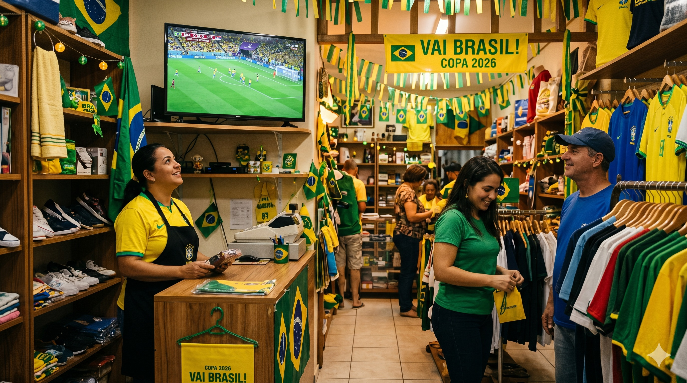

Copa do Mundo 2026: como qualquer negócio pode lucrar com os jogos, não só bares e restaurantes

Eduardo Duarte
Consultor de Gestão & Customer Experience · sonata.cx
A Confederação Nacional do Comércio projeta que a Copa do Mundo 2026 vai movimentar R$ 4,32 bilhões no varejo brasileiro. O Sebrae-SP estima que até 791 mil pequenos negócios podem se beneficiar do torneio. E a maioria dos donos de comércio vai ouvir esses números, concordar que é uma boa notícia para bares e restaurantes, e voltar para o que estava fazendo.
O problema com essa leitura é que ela deixa de fora a maior parte dos pequenos negócios.
Os jogos do Brasil são à noite — e isso muda tudo
Nas edições anteriores da Copa, o empresário enfrentava um dilema real: fechar a loja durante o jogo, arriscar funcionário distraído, ou torcer para o Brasil perder rápido e o movimento voltar ao normal. Em 2026, esse dilema não existe. Pelo menos não na primeira fase.
Os três jogos do Brasil na primeira fase acontecem às 19h (dias 13 e 24 de junho) e às 21h30 (dia 19 de junho). O comércio tradicional do interior já está fechado ou encerrando quando a bola rola. Não há decisão a tomar sobre liberar funcionário no meio do expediente, não há queda de produtividade durante o horário comercial e não há motivo para fechar mais cedo.
A Copa de 2026, pelo menos para os negócios bem longe dos EUA, Canadá e México, começa com uma vantagem que as edições anteriores não tinham: ela não compete com o seu horário de trabalho.
A novidade que muda o jogo para qualquer tipo de negócio
Uma outra enorme diferença para a Copa 2026 das demais é que 100% dos jogos serão transmitidos pelo YouTube neste ano, pelo canal Cazé TV. Não é necessário assinar nenhum canal, contratar nenhum pacote de TV por assinatura nem pagar qualquer serviço adicional. Uma TV com conexão à internet já é suficiente para transmitir todos os 104 jogos do torneio.
Isso abre uma possibilidade que até hoje era cara ou burocrática: qualquer comércio pode passar a Copa no estabelecimento, durante todo o torneio, sem custo extra.
Por que colocar uma TV no seu negócio mesmo que você não seja bar
A lógica parece óbvia para quem trabalha com alimentação e bebidas. Para uma loja de roupas, uma barbearia, um salão ou uma loja de material de construção, parece não fazer sentido. Mas faz.
Durante a Copa, boa parte da atenção das pessoas está voltada para o torneio, mesmo nos dias em que o Brasil não joga. Quem está circulando pelo comércio — num shopping, numa rua de lojas, num centro comercial — está com o campeonato na cabeça. Uma TV visível mostrando um jogo funciona como um ponto de parada: o cliente que passaria em frente sem entrar para, olha, e muitas vezes entra.
O comércio que normalmente depende do fluxo de pessoas que já tinham intenção de compra passa a capturar também o consumidor que estava apenas passando. Esse consumidor, numa tarde comum, não seria monetizado. Durante a Copa, com uma TV na vitrine ou voltada para a porta, ele vira uma oportunidade.
O problema que ninguém menciona: o FOMO do funcionário
FOMO é a sigla em inglês para Fear of Missing Out — em português, o medo de ficar de fora, aquela sensação de estar perdendo algo que todo mundo está vivendo. Durante a Copa, ela aparece em forma de funcionário desanimado, que sabe que os amigos estão vendo o jogo enquanto ele está atrás do balcão.
Esse desânimo tem custo real: menos energia no atendimento, mais distração com o celular para acompanhar o placar, e uma sensação difusa de que o trabalho está competindo com algo mais importante. Não é preguiça — é uma resposta humana a um evento coletivo de alta carga emocional.
Uma TV passando os jogos no estabelecimento não resolve tudo, mas muda a dinâmica. O funcionário acompanha o jogo enquanto trabalha, não sente que está perdendo o que todo mundo está vendo, e o atendimento ao cliente acontece em cima de um clima de animação que contamina positivamente a experiência de quem está na loja.
Como colocar em prática
A configuração é simples. Você precisa de uma TV com acesso à internet (via cabo ou Wi-Fi), uma conta no YouTube (gratuita) e o canal da Cazé TV no YouTube, que vai transmitir todos os jogos ao vivo durante o torneio. Se tiver TV aberta, ainda poderá passar os jogos que serão transmitidos na Globo ou SBT também. Elas não passarão todos os 104 jogos, mas passarão uma grande parte.
Posicione a TV de forma que seja visível tanto para quem está dentro da loja quanto, se possível, para quem passa na calçada ou no corredor do shopping. Não precisa ter som alto — a imagem já cumpre o papel de chamar atenção e criar o ambiente. Volume moderado ou até legendas já resolvem sem incomodar o atendimento.
Nos dias de jogo do Brasil, vale intensificar: decoração simples com as cores da seleção, uma promoção temática rápida, ou simplesmente comunicar nas redes sociais que o estabelecimento vai passar o jogo. O custo é quase zero e o sinal para o cliente é claro: esse negócio está no clima.
O que muda para o seu negócio nessa Copa
A Copa do Mundo 2026 começa no dia 11 de junho e vai até 19 de julho. São mais de cinco semanas em que o consumidor brasileiro vai estar com atenção dividida entre a rotina e o torneio. O pequeno negócio que entender isso como oportunidade — e não como ameaça à produtividade — sai na frente.
Bares e restaurantes já sabem o que fazer. A pergunta mais interessante é o que o negócio que não tem esse perfil vai fazer com cinco semanas de atenção coletiva voltada para a mesma direção. Uma TV, uma tomada e uma conta no YouTube gratuita podem ser o começo de uma resposta.
Se você quer entender como a Sonata pode apoiar seu negócio na organização e crescimento, acesse sonatacx.com.br, acompanhe a Sonata no Instagram em @sonata_cx ou fale pelo WhatsApp e e-mail disponíveis no site.
sonata.cx
Seu negócio está aproveitando todas as oportunidades do momento?
A Sonata ajuda pequenas e médias empresas a identificar oportunidades, organizar processos e crescer com mais consistência — Copa ou não.
Perguntas frequentes sobre a Copa do Mundo 2026 e o pequeno negócio
Os jogos do Brasil na Copa 2026 são em horário comercial?
Não. Os três jogos da fase de grupos acontecem às 19h (13 e 24 de junho) e às 21h30 (19 de junho), fora do horário comercial tradicional do interior.
Como assistir à Copa do Mundo 2026 de graça no estabelecimento?
O YouTube vai transmitir 100% dos jogos pelo canal Cazé TV, gratuitamente. Basta acessar o canal numa TV com conexão à internet, sem necessidade de assinatura. Jogos da Globo e SBT também podem ser transmitidos pela TV aberta.
Vale a pena colocar TV num negócio que não é bar ou restaurante durante a Copa?
Sim. Uma TV visível funciona como ponto de atração para quem circula pelo comércio, aumentando o tempo de permanência e criando oportunidades de venda com consumidores que não tinham intenção inicial de entrar.
O que é FOMO e por que importa para o meu negócio durante a Copa?
FOMO (Fear of Missing Out) é o medo de ficar de fora de algo que todo mundo está vivendo. Durante a Copa, funcionários sem acesso ao jogo tendem a ficar desanimados e distraídos. Uma TV no estabelecimento reduz esse efeito e mantém o clima de trabalho mais positivo.
Qual é o impacto econômico esperado da Copa do Mundo 2026 no Brasil?
A Confederação Nacional do Comércio projeta R$ 4,32 bilhões de impacto no varejo brasileiro, com 70% concentrado em alimentação e bebidas. O Sebrae-SP estima que até 791 mil pequenos negócios no estado podem ser beneficiados.